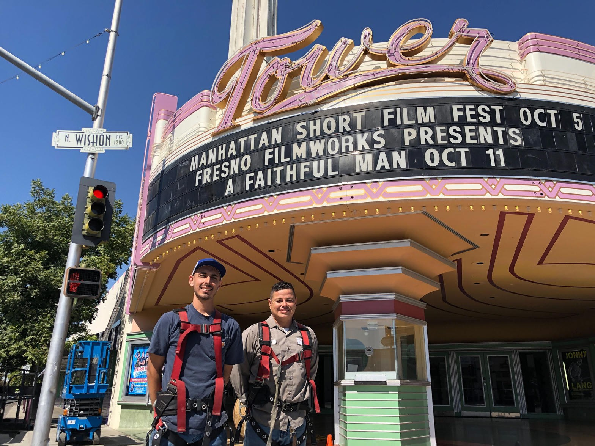
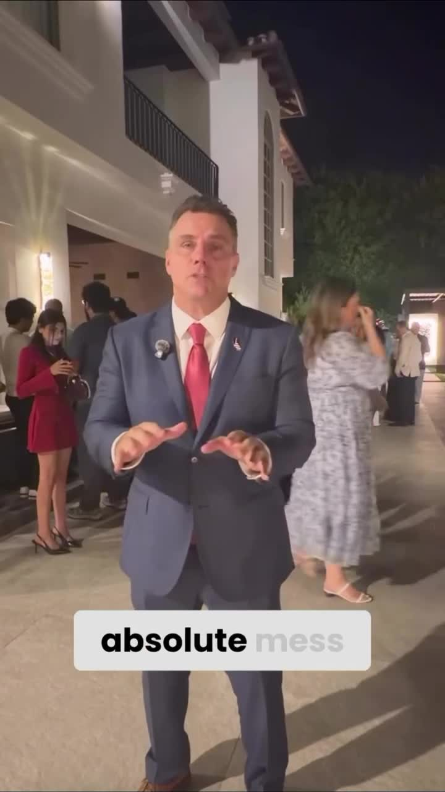
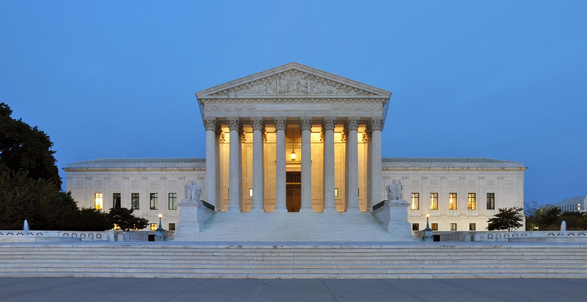

Lord, we come as a neighborhood that still believes children are not inventory and that a street is not a hunting ground. Give us clean speech. Give us courage without a lie. Give us the will to restore the law so that public safety can live again. Amen.
THE HIGH TOWER DISTRICT FAITH is praying. We are asking God to remove those who prey on public safety, and those who prey on the First Amendment right of the people to assemble peaceably, and those who try to stop a citizen from speaking facts.
Ephesians 5:11-13
Take no part in the worthless deeds of evil and darkness; instead, expose them. It is shameful even to talk about the things that ungodly people do in secret. But their evil intentions will be exposed when the light shines on them.
That is not a hobby. That is not a brand. That is the work. Darkness does not negotiate. It hides. It uses chairs. It uses language. It calls a crime a program and then sells the program as safety.
John 3:19-21
And the judgment is based on this fact: God’s light came into the world, but people loved the darkness more than the light, for their actions were evil. All who do evil hate the light and refuse to go near it for fear their sins will be exposed. But those who do what is right come to the light so others can see that they are doing what God wants.
Isaiah 5:20
What sorrow for those who say that evil is good and good is evil, that dark is light and light is dark, that bitter is sweet and sweet is bitter.
When a state inverts the words, the street follows. When officials treat child predation as an inconvenience instead of a fire, the neighborhood groans. That groan is not a mood. It is a measurement.
Proverbs 29:2
When the godly are in authority, the people rejoice. But when the wicked are in power, they groan.

I already said it in that building. The published record is here: stories.ahightower.com/pc-aug19. There are predators in Fresno. You do not have to look hard. Some sit in chairs just like the chairs in that room. Fallacy was used to manage public opinion while the actual work of removing predators was left unfinished. That is not a new indictment invented tonight. That is what was spoken into a public hearing and then written down so the people could read it.
Jesus did not leave the crime against a child as a footnote. He named it among the gravest things a man can do.
Matthew 18:6
But if you cause one of these little ones who trusts in me to fall into sin, it would be better for you to have a large millstone tied around your neck and be drowned in the depths of the sea.
Luke 17:1-2
There will always be temptations to sin, but what sorrow awaits the person who does the tempting! It would be better to be thrown into the sea with a millstone hung around your neck than to cause one of these little ones to fall into sin.
So we say it without theater. A network that shields child predation, then uses the chairs of city and state to manage the public, is not a policy disagreement. It is darkness. The faithful are commanded to expose it. We do not invent a court case we cannot prove. We do name the commandment, the Penal Code the city already knows, and the chairs that keep choosing delay.
Isaiah 1:17
Learn to do good. Seek justice. Help the oppressed. Defend the cause of orphans. Fight for the rights of widows.
Public safety is not a product you buy from a utility or a slogan you hang on a housing plan. Public safety is the fruit of law and order. When the law is enforced, children are safer. When the law is mocked, the alley becomes a classroom for the next crime. Restore the law and you restore, transitively, the safety of the block.
Romans 13:3-4
For the authorities do not strike fear in people who are doing right, but in those who are doing wrong. Would you like to live without fear of the authorities? Do what is right, and they will honor you. The authorities are God’s servants, sent for your good. But if you are doing wrong, of course you should be afraid, for they have the power to punish you. They are God’s servants, sent for the very purpose of punishing those who do what is wrong.
That verse does not baptize a party. It describes an office that is working. When the office stops punishing what is wrong, the people are not required to pretend the office is still holy. They are required to tell the truth and to demand that the sword be used on predators instead of on the neighbor who speaks.

John 8:32
And you will know the truth, and the truth will set you free.
Facts are not hate. Peaceable assembly is not disorder. Naming child predation is not extremism. It is obedience. The First Amendment is not a decoration. It is how a free people bring secret harm into the open before the millstone generation grows up in the dark.
Luke 8:17
For all that is secret will eventually be brought into the open, and everything that is concealed will be brought to light and made known to all.

The state is not exempt from the same light that hits Fresno Street. Michael E. Gates called Rob Bonta out by name. He said he sent a letter in February and received no response. He said California is a mess and that the Attorney General has a lot to account for. He asked Bonta to show up for a debate. That is the public part of what an officer of the law is supposed to do: stand in the light and answer for the record.
This pulpit does not pretend a campaign video is a verdict. It does say the people of California are allowed to require answers from the highest law office in the state. Suffering on the street is not a mystery when the light is refused.

Proverbs 14:34
Godliness makes a nation great, but sin is a disgrace to any people.
Micah 6:8
No, O people, the Lord has told you what is good, and this is what he requires of you: to do what is right, to love mercy, and to walk humbly with your God.
Amos 5:24
Instead, I want to see a mighty flood of justice, an endless river of righteous living.
Doing what is right includes putting honest officers of the law back over the machinery of the city and the state. Doing what is right includes refusing the sale of public safety as a brand while predators keep their chairs. Doing what is right includes praying, then speaking, then assembling peaceably, then telling the truth about the chairs.
James 1:22
But don’t just listen to God’s word. You must do what it says. Otherwise, you are only fooling yourselves.
This is the charge to the faithful of the High Tower District.
Pray. Then speak. Assemble peaceably. Tell the truth about the chairs. Demand that law be restored so public safety can follow. Do not partner with the dark. Expose it.
The commandment of Jesus Christ still stands. Expose those who would lead a child into sin.
Sources
- High Tower District civic record, Follow the Law, Planning Commission public comment, August 19, 2026. stories.ahightower.com/pc-aug19
- California Penal Code 311.11, as cited in that published record.
- Public campaign remarks by Michael E. Gates challenging Attorney General Rob Bonta to a debate. Still taken from the clip provided with this sermon. Caption names the public demand, not a court finding.
- Scripture quotations are from the New Living Translation.
- Photographs: Fresno City Hall exterior, A. Zahner Company project documentation of the public building. Tower Theatre public facade, KVPR report on Fresno neon work. United States Supreme Court Building, Wikimedia Commons / Wikipedia photograph of the public exterior.